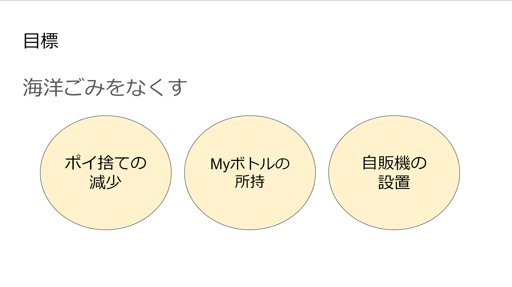
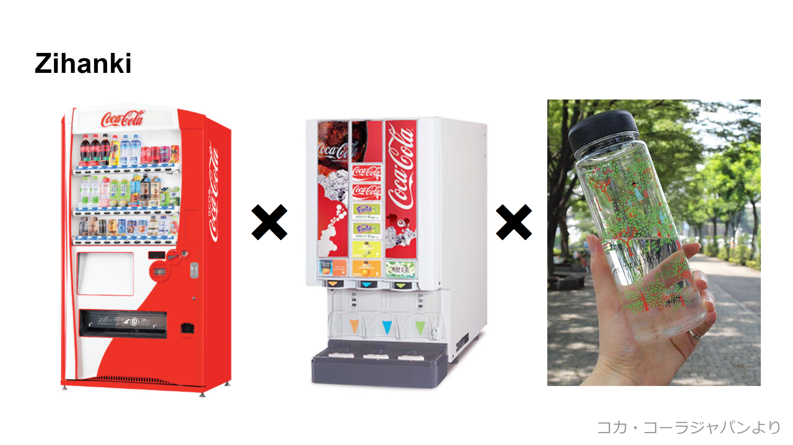

このプロジェクトでは、自分で解決したいSDGsの問題を選び、その問題についての解決策をチームで考えました。私たちのチームは12番つくる責任つかう責任。14番海の豊かさを守ろう。15番陸の豊かさも守ろう。 から、ポイ捨てを減らし、海のごみを減らすことで海洋環境の悪化を止め、海の生き物たちを守りたいと考えました。
私たちチームは海洋のごみを無くすのを目標のもと、三つのやりたいテーマを設定しました。ペットボトルの減少を一番に考え、ペットボトルのごみを減らすにはどうしたらいいか。みんな自分のMyボトルを持てばいいんじゃないか。自動販売機を全部マイボトルに直接入れられるようにしよう。という結論に至りました。
そこで私たちは、自動販売機にMyボトルを設置し、ドリンクバーのように液体を入れるようにできるものを作り、すべての自動販売機をそれと入れ替えることで、みんなにMyボトルをもってもらうプロジェクトを企画、提案し、発表しました。もちろん大規模で改善点の多い考えですが、本当に実現できたらとても夢があると思います。